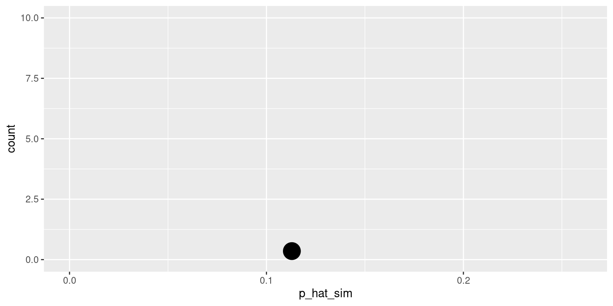
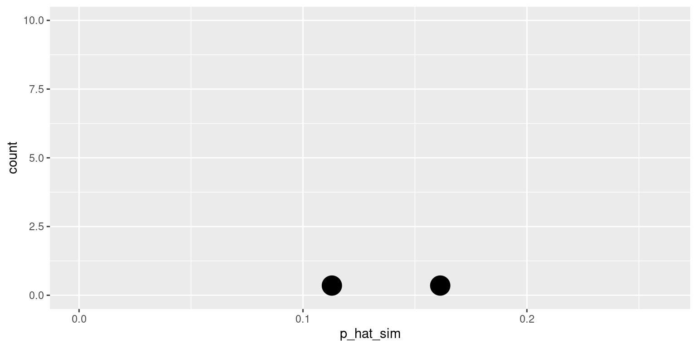
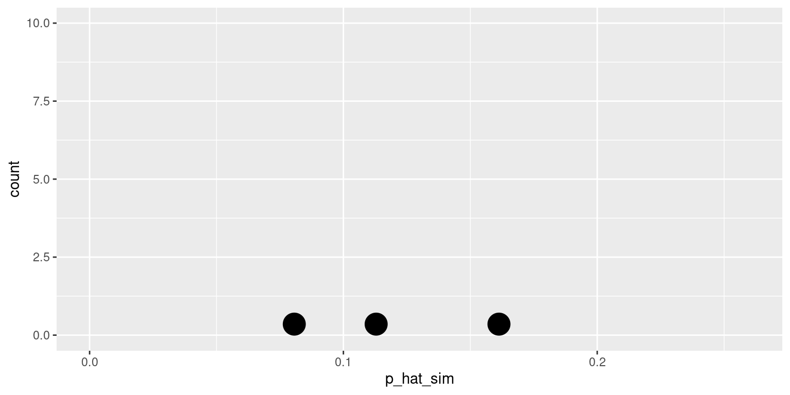

library(openintro) # for data for case study 2: yawn
Loading required package: airports
Loading required package: cherryblossom
Loading required package: usdata
Attaching package: 'openintro'
The following object is masked from 'package:modeldata':
ames
Case study 1: Donors
Organ donors
People providing an organ for donation sometimes seek the help of a special “medical consultant”. These consultants assist the patient in all aspects of the surgery, with the goal of reducing the possibility of complications during the medical procedure and recovery. Patients might choose a consultant based in part on the historical complication rate of the consultant’s clients.
One consultant tried to attract patients by noting that the average complication rate for liver donor surgeries in the US is about 10%, but her clients have only had 3 complications in the 62 liver donor surgeries she has facilitated. She claims this is strong evidence that her work meaningfully contributes to reducing complications (and therefore she should be hired!).
# A tibble: 2 × 2
outcome n
<chr> <int>
1 complication 3
2 no complication 59
Parameter vs. statistic
A parameter for a hypothesis test is the “true” value of interest. We typically estimate the parameter using a sample statistic as a point estimate.
\(p~\): true rate of complication
\(\hat{p}~\): rate of complication in the sample = \(\frac{3}{62}\) = 0.048
Correlation vs. causation
Is it possible to assess the consultant’s claim using the data?
No. The claim is that there is a causal connection, but the data are observational. For example, maybe patients who can afford a medical consultant can afford better medical care, which can also lead to a lower complication rate.
While it is not possible to assess the causal claim, it is still possible to test for an association using these data. For this question we ask, could the low complication rate of \(\hat{p}\) = 0.048 be due to chance?
Two claims
Null hypothesis: “There is nothing going on”
Complication rate for this consultant is no different than the US average of 10%
Alternative hypothesis: “There is something going on”
Complication rate for this consultant is different than the US average of 10%
Hypothesis testing as a court trial
Hypotheses:
Null hypothesis, \(H_0\): Defendant is innocent
Alternative hypothesis, \(H_A\): Defendant is guilty
Present the evidence: Collect data
Judge the evidence: “Could these data plausibly have happened by chance if the null hypothesis were true?”
Yes: Fail to reject \(H_0\)
No: Reject \(H_0\)
Hypothesis testing framework
Start with a null hypothesis, \(H_0\), that represents the status quo
Set an alternative hypothesis, \(H_A\), that represents the research question, i.e. what we’re testing for
Conduct a hypothesis test under the assumption that the null hypothesis is true and calculate a p-value (probability of observed or more extreme outcome given that the null hypothesis is true)
if the test results suggest that the data do not provide convincing evidence for the alternative hypothesis, stick with the null hypothesis
if they do, then reject the null hypothesis in favor of the alternative
Setting the hypotheses
Which of the following is the correct set of hypotheses for evaluating whether the consultant’s complication rate is different than the US average of 10%?
Since \(H_0: p = 0.10\), we need to simulate a null distribution where the probability of success (complication) for each trial (patient) is 0.10.
Describe how you would simulate the null distribution for this study using a bag of chips. How many chips? What colors? What do the colors indicate? How many draws? With replacement or without replacement?
What do we expect?
When sampling from the null distribution, what is the expected proportion of success (complications)?
Simulation #1
sim1
complication no complication
7 55
[1] 0.1129032

Simulation #2
sim2
complication no complication
10 52
[1] 0.1612903

Simulation #3
sim3
complication no complication
5 57
[1] 0.08064516

This is getting boring…
We need a way to automate this process!
The first dataset we’ll use is organ_donors:
organ_donor <-read_csv("organ-donor.csv")
Rows: 62 Columns: 1
── Column specification ────────────────────────────────────────────────────────
Delimiter: ","
chr (1): outcome
ℹ Use `spec()` to retrieve the full column specification for this data.
ℹ Specify the column types or set `show_col_types = FALSE` to quiet this message.
The hypotheses we are testing are:
\(H_0: p = 0.10\)
\(H_A: p \ne 0.10\)
where \(p\) is the true complication rate for this consultant.
Exercise 1
Construct the null distribution with 100 resamples. Name it null_dist_donor. How many rows does null_dist_donor have? How many columns? What does each row and each column represent?
# add code here
Add response here.
Exercise 2
Where do you expect the center of the null distribution to be? Visualize it to confirm.
Calculate the observed complication rate of this consultant. Name it obs_stat_donor.
# add code here
Exercise 3
Overlay the observed statistic on the null distribution and comment on whether an observed outcome as extreme as the observed statistic, or lower, is a likely or unlikely outcome, if in fact the null hypothesis is true.
Calculate the p-value and comment on whether it provides convincing evidence that this consultant incurs a lower complication rate than 10% (overall US complication rate).
In this study 50 people were randomly assigned to two groups: 34 to a group where a person near them yawned (treatment) and 16 to a control group where they didn’t see someone yawn (control).
The data are in the openintro package: yawn
yawn |>count(group, result)
# A tibble: 4 × 3
group result n
<fct> <fct> <int>
1 ctrl not yawn 12
2 ctrl yawn 4
3 trmt not yawn 24
4 trmt yawn 10
Proportion of yawners
yawn |>count(group, result) |>group_by(group) |>mutate(p_hat = n /sum(n))
# A tibble: 4 × 4
# Groups: group [2]
group result n p_hat
<fct> <fct> <int> <dbl>
1 ctrl not yawn 12 0.75
2 ctrl yawn 4 0.25
3 trmt not yawn 24 0.706
4 trmt yawn 10 0.294
Proportion of yawners in the treatment group: \(\frac{10}{34} = 0.2941\)
Proportion of yawners in the control group: \(\frac{4}{16} = 0.25\)
Difference: \(0.2941 - 0.25 = 0.0441\)
Our results match the ones calculated on the MythBusters episode.
Independence?
Based on the proportions we calculated, do you think yawning is really contagious, i.e. are seeing someone yawn and yawning dependent?
# A tibble: 4 × 4
# Groups: group [2]
group result n p_hat
<fct> <fct> <int> <dbl>
1 ctrl not yawn 12 0.75
2 ctrl yawn 4 0.25
3 trmt not yawn 24 0.706
4 trmt yawn 10 0.294
Dependence, or another possible explanation?
The observed differences might suggest that yawning is contagious, i.e. seeing someone yawn and yawning are dependent.
But the differences are small enough that we might wonder if they might simple be due to chance.
Perhaps if we were to repeat the experiment, we would see slightly different results.
So we will do just that - well, somewhat - and see what happens.
Instead of actually conducting the experiment many times, we will simulate our results.
Two competing claims
Null hypothesis:
“There is nothing going on.” Yawning and seeing someone yawn are independent, yawning is not contagious, observed difference in proportions is simply due to chance.
Alternative hypothesis:
“There is something going on.” Yawning and seeing someone yawn are dependent, yawning is contagious, observed difference in proportions is not due to chance.
Simulation by hand - setup
A regular deck of cards is comprised of 52 cards: 4 aces, 4 of numbers 2-10, 4 jacks, 4 queens, and 4 kings.
Take out two aces from the deck of cards and set them aside.
The remaining 50 playing cards to represent each participant in the study:
14 face cards (including the 2 aces) represent the people who yawn.
36 non-face cards represent the people who don’t yawn.
Simulation by hand - running
Shuffle the 50 cards at least 7 times1 to ensure that the cards counted out are from a random process.
Count out the top 16 cards and set them aside. These cards represent the people in the control group.
Out of the remaining 34 cards (treatment group) count the number of face cards (the number of people who yawned in the treatment group).
Calculate the difference in proportions of yawners (treatment - control), and plot it on the board.
Mark the difference you find on the dot plot on the board.
Using the yawn dataset in the openintro package, conduct a hypothesis test for evaluating whether yawning is contagious. First, set the hypotheses. Then, conduct a randomization test using 1000 simulations. Visualize and calculate the p-value and use it to make a conclusion about the statistical discernability of the difference in proportions of yawners in the two groups. Then, comment on whether you “buy” this conclusion.
Add response here.
# add code here
Recap
Types of alternative hypotheses
One-sided (one-tailed) alternatives: The parameter is hypothesized to be less than or greater than the null value, < or >
Two-sided (two-tailed) alternatives: The parameter is hypothesized to be not equal to the null value, \(\ne\)
Calculated as two times the tail area beyond the observed sample statistic
More objective, and hence more widely preferred
Average systolic blood pressure of people with Stage 1 Hypertension is 150 mm Hg. Suppose we want to use a hypothesis test to evaluate whether a new blood pressure medication has an effect on the average blood pressure of heart patients. What are the hypotheses?
Discernability level
We often use 5% as the cutoff for whether the p-value is low enough that the data are unlikely to have come from the null model. This cutoff value is called the discernability level, \(\alpha\).
If p-value < \(\alpha\), reject \(H_0\) in favor of \(H_A\): The data provide convincing evidence for the alternative hypothesis.
If p-value > \(\alpha\), fail to reject \(H_0\) in favor of \(H_A\): The data do not provide convincing evidence for the alternative hypothesis.
Statistically discernable
If you’ve taken a statistics course before, or read papers that use hypothesis testing for making a conclusion, you might have encountered the term “statistically significant” or “significance level”.
We will use the term “statistically discernable” or discernability level”, because “significant” has a different meaning in everyday language and this often causes misconceptions of what “statistically significant” means. It doesn’t necessarily mean a notable or important event has happened, it just means the data are unlikely to have come from the null model.
Setting a seed
Goal: Pin down the random generation so that the same random generation happens each time a document is rendered (by you or by someone else wanting to replicate your results)
When: Set a seed each time right before generate()ing new resamples. Setting a seed once in a document would also work for re-rendering the document, but considering we often run the code chunk interactively, it’s best to set the seed again in each code chunk that does random generation.